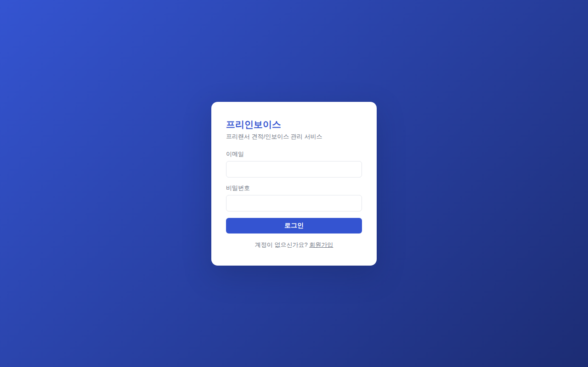
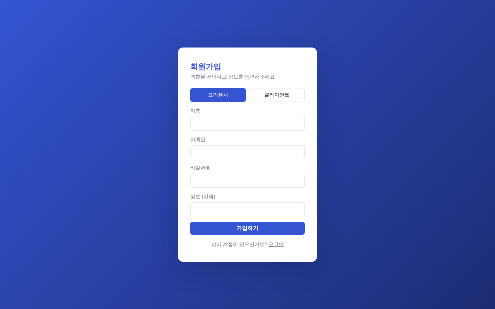
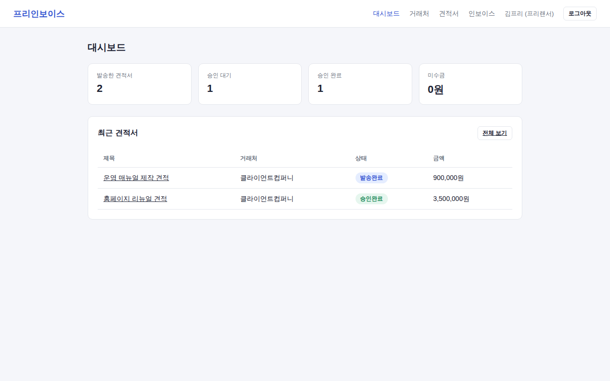
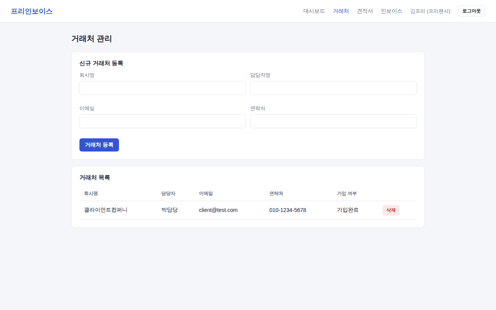
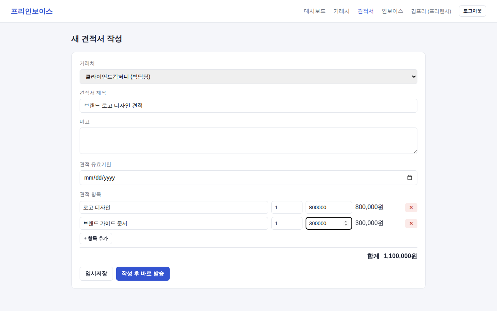
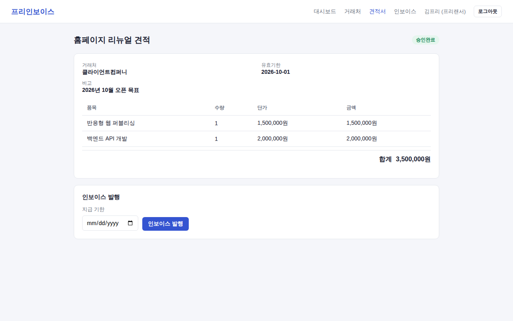
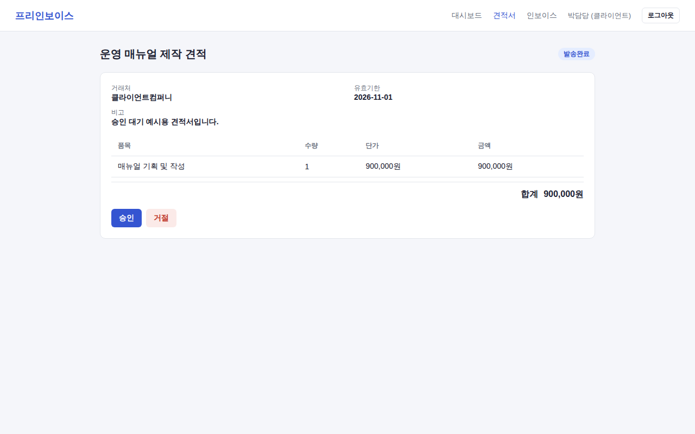
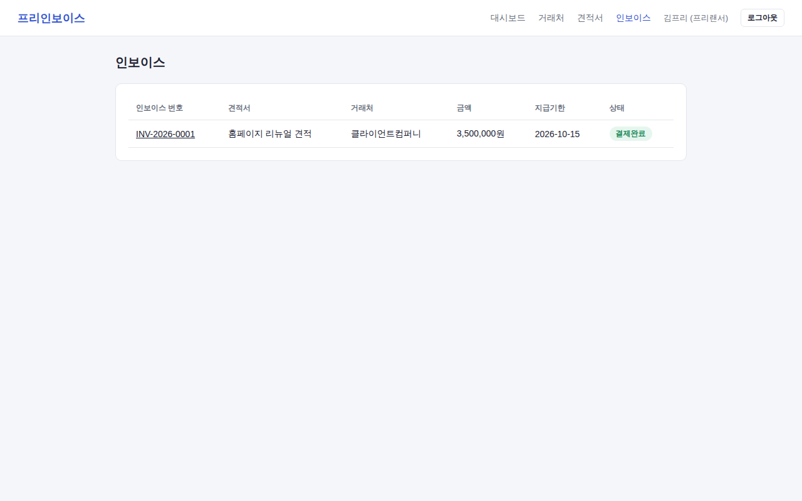
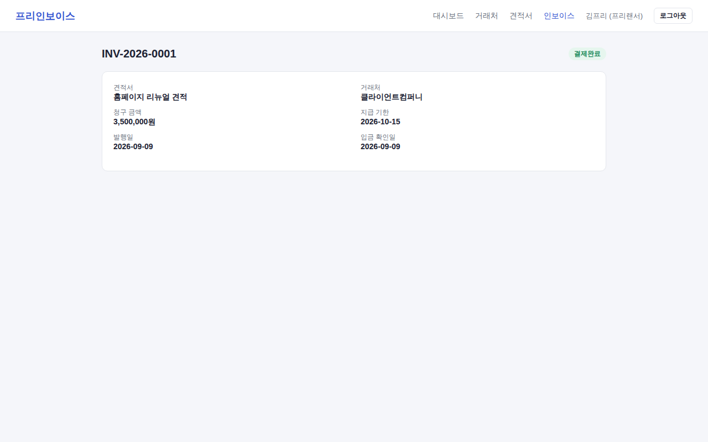
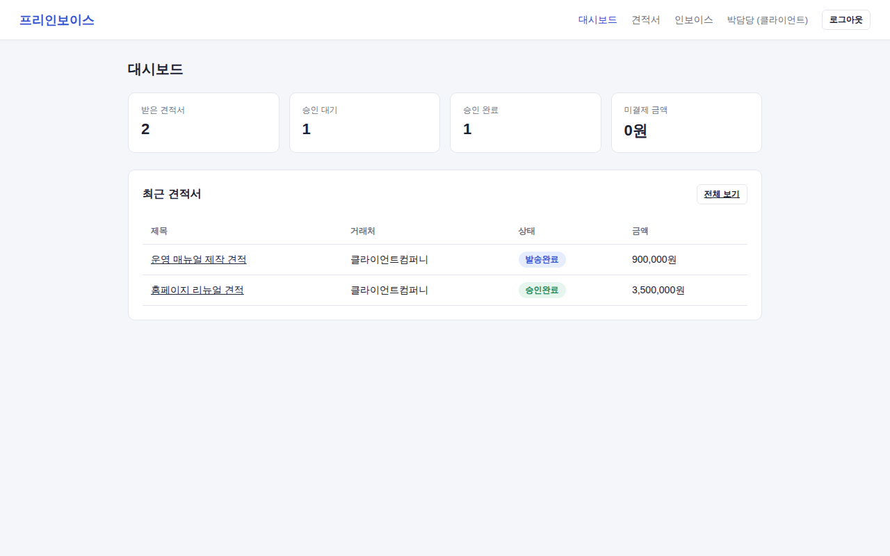

| 핵심 가치 | 설명 |
|---|---|
| 흐름의 일원화 | 견적 작성 → 발송 → 승인/거절 → 인보이스 발행 → 입금 확인까지 하나의 서비스에서 추적 가능 |
| 투명한 승인 프로세스 | 클라이언트가 직접 로그인하여 견적을 확인하고 승인/거절 의사를 명확히 기록 |
| 정산 현황 파악 | 대시보드에서 승인 대기 건수, 미수금 총액을 한눈에 확인 |
| 주요 기능 | 대상 액터 |
|---|---|
| 회원가입 / 로그인 | 프리랜서, 클라이언트 |
| 거래처(클라이언트) 등록 및 관리 | 프리랜서 |
| 견적서 작성(라인아이템 단위) / 임시저장 / 발송 | 프리랜서 |
| 견적서 확인 및 승인/거절 | 클라이언트 |
| 승인된 견적서 기반 인보이스 발행 | 프리랜서 |
| 입금 확인 처리(결제 상태 변경) | 프리랜서 |
| 대시보드(승인 대기 / 미수금 현황 요약) | 프리랜서, 클라이언트 |
| Actor | 역할 | 상세 제공 기능 |
|---|---|---|
| 프리랜서 (FREELANCER) |
서비스 운영 주체. 거래처 관리 및 견적/인보이스 발행 |
|
| 클라이언트 (CLIENT) |
견적을 받는 대상. 승인/거절 의사결정 |
|
와이어프레임 대신 실제로 돌려본 화면을 그대로 캡처해서 순서대로 붙였다.










전체 내용은 2반_이름_프리인보이스-DB.dbml 파일에 있다. 여기서는 테이블 5개만 짚는다.
| 테이블 | 주요 컬럼 | 설명 |
|---|---|---|
| users | id, email, password, name, role, company_name | 프리랜서/클라이언트 통합 사용자 테이블. role로 구분 |
| clients | id, freelancer_id(FK), client_user_id(FK, nullable), company_name, email | 프리랜서가 관리하는 거래처. client_user_id는 실제 가입 전까지 NULL |
| quotes | id, freelancer_id(FK), client_id(FK), status, total_amount | 견적서 헤더. status(DRAFT/SENT/APPROVED/REJECTED)로 흐름 관리 |
| quote_items | id, quote_id(FK), name, quantity, unit_price, amount | 견적 라인아이템. amount는 서버가 자동 계산 |
| invoices | id, quote_id(FK, unique), invoice_number, total_amount, due_date, status | 승인된 견적서 1건당 인보이스 1건. status(UNPAID/PAID/OVERDUE) |
clients를 users와 굳이 나눈 건, 프리랜서가 아직 가입도 안 한 거래처를 미리 등록해둘 수 있어야 했기 때문이다. 나중에 그 이메일로 실제 가입하면 연결되는 식.
가격 쪽은 quote_items.amount, quotes.total_amount 둘 다 서버에서만 계산해서 저장한다. 프론트에서 계산한 값을 그대로 믿었다가는 요청을 조작해서 금액을 바꿔치기할 수 있다.
invoices.quote_id에는 unique를 걸었다. 견적서 하나에 인보이스가 두 번 발행되는 걸 애플리케이션 로직이 아니라 DB가 직접 막게 하고 싶었다.
전체 명세는 2반_이름_프리인보이스-API.yml (OpenAPI 3.0) 파일을 참고.
| Method | Path | 설명 |
|---|---|---|
| POST | /auth/signup | 회원가입 (역할 선택) |
| POST | /auth/login | 로그인, JWT 발급 |
| GET / POST | /clients | 거래처 목록 조회 / 신규 등록 |
| PUT / DELETE | /clients/{id} | 거래처 수정 / 삭제 |
| GET / POST | /quotes | 견적서 목록 조회(역할별 분기) / 신규 작성 |
| GET / PUT / DELETE | /quotes/{id} | 견적서 상세 조회 / 수정(DRAFT만) / 삭제(DRAFT만) |
| POST | /quotes/{id}/send | 견적서 발송 (DRAFT → SENT) |
| PUT | /quotes/{id}/decision | 클라이언트의 승인/거절 (SENT → APPROVED/REJECTED) |
| POST | /quotes/{id}/invoice | 승인된 견적서 기반 인보이스 발행 |
| GET | /invoices, /invoices/{id} | 인보이스 목록/상세 조회 |
| PUT | /invoices/{id}/status | 입금 확인 처리 (UNPAID → PAID) |
가장 오래 붙잡고 있었던 건 클라이언트 쪽이었다. 프리랜서가 견적을 보내려는 상대가
아직 이 서비스에 가입도 안 한 사람일 수 있다는 게 문제였다. 처음에는 그냥 클라이언트도
프리랜서처럼 먼저 가입부터 하는 걸 전제로 짜려고 했는데, 실제로는 "거래처 등록 → 견적 발송 →
그제서야 상대가 가입" 순서가 훨씬 자연스러웠다. 그래서 clients 테이블에
client_user_id를 nullable로 두고, 나중에 같은 이메일로 가입하면 자동으로
연결되게 바꿨다.
금액 계산도 한 번 걸렸던 부분이다. 처음엔 프론트에서 수량×단가를 계산해서 그대로 서버에 넘기는 식으로 짜려고 했다. 그런데 이렇게 하면 요청 값만 바꿔서 견적 금액을 낮춰 보낼 수 있겠다는 생각이 들어서, 결국 서버가 품목 리스트만 받고 금액은 직접 다시 계산해서 저장하도록 고쳤다.
상태값도 처음에는 자유롭게 왔다 갔다 하게 뒀었다. 그런데 클라이언트가 이미 확인한 견적서를 프리랜서가 몰래 다시 수정할 수 있다는 게 마음에 걸려서, DRAFT→SENT→APPROVED/REJECTED, UNPAID→PAID처럼 한쪽 방향으로만 넘어가게 막아버렸다.
시간 관계상 이번엔 손대지 못한 부분들이다. 입금 확인을 지금은 프리랜서가 수동으로 누르는데, PG(결제대행사) 연동이 붙으면 이 버튼 자체가 없어질 것이다. 견적서를 PDF로 뽑아서 메일로 바로 보내는 기능, 클라이언트가 거절할 때 사유를 남기고 금액을 조정해서 다시 보내는 재협상 흐름, 그리고 해외 클라이언트를 받는다면 다중 화폐·부가세 처리도 다음 단계에서는 필요할 것 같다.